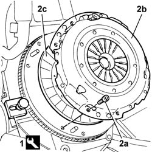
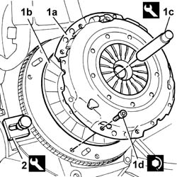
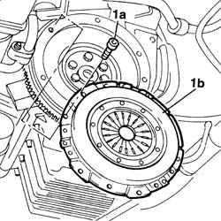
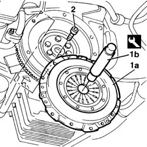

1810A24 CLUTCH - R.R. with gearbox removed
- Path
- Procedures > 18 CLUTCH > 1810 CLUTCH MECHANISMS > 1810A CLUTCH MECHANISM > 1810A24 CLUTCH - R.R. with gearbox removed
- Kind
- repair procedure (removal / refitting; the operation number is the code)
- Applies to
- engines: 2.0 TB, 2.4 20V, 2.4 JTD 10V, 2.4 JTD 20V; all production periods
- Interactive page
- https://sloeber94.github.io/elrnDB-lThss/en/#/78085
Applies to: engines: 2.0 TB, 2.4 20V; all production periods
 Removing
Removing
 Refitting
Refitting1. Fit the counter-torque tool to stop the rotation of the flywheel.
 | Description | Code | Function |
|---|---|---|---|
1 | Counter-torque | 1.860.846.000 | Engine flywheel lock |
2. Undo the bolts (2a) and remove the pressure plate (2b) and the clutch disc (2c).

Applies to: engines: 2.0 TB, 2.4 20V; all production periods
Refitting
Removing1. Position the pressure plate (1a), complete with clutch disc (1b) in its housing using the tool (1c) and secure it tightening the bolts (1d) to the recommended torque.
| Description | Code | Function |
|---|---|---|---|
1c | Clutch locating tool | 1.870.447.000 | Tool for centering clutch plate on engine flywheel |
 | Value - daNm | Fastening | Component | Ø |
|---|---|---|---|---|
1d | 2.8 | Bolt | CLUTCH ASSEMBLY | M8 |
2. Remove the counter-torque tool for stopping the rotation of the flywheel.
| Description | Code | Function |
|---|---|---|---|
2 | Counter-torque | 1.860.846.000 | Engine flywheel lock |

Applies to: engines: 2.4 JTD 10V; all production periods
Removing
Refitting- Fit the counter-torque tool to stop the rotation of the flywheel.
| Description | Code | Function |
|---|---|---|---|
. | Counter-torque | 1.860.846.000 | Removing - refitting clutch |
1. Undo the fixing bolts (1a) and remove the clutch (1b).

Applies to: engines: 2.4 JTD 10V; all production periods
Refitting
Removing1. Position the complete clutch in the special housing and centre the clutch in relation to the crankshaft using the tool.
| Description | Code | Function |
|---|---|---|---|
1b | Clutch locating tool | 1.870.081.000 | Refitting clutch |
2. Tighten the bolts fixing the clutch.

Applies to: engines: 2.4 JTD 10V; all production periods
- Remove the tools used previously.
| Description | Code | Function |
|---|---|---|---|
. | Counter-torque | 1.860.846.000 | Removing - refitting clutch |
| Description | Code | Function |
|---|---|---|---|
. | Clutch locating tool | 1.870.081.000 | Centering clutch |
- Tighten the bolts fixing the clutch drip tray to the flywheel to the recommended torque.
| Value - daNm | Fastening | Component | Ø |
|---|---|---|---|---|
. | 2.8 | Bolt | CLUTCH ASSEMBLY | M8 |
Applies to: engines: 2.4 JTD 20V; all production periods
- Remove and fit the clutch assembly using the specific procedure and tools described for engine service.
Topics that link to this page (10)
- E01 CLUTCH DOES NOT RELEASE CORRECTLY
- E02 CLUTCH SLIPPING
- 1020A20 CRANKCASE SUMP - R.R. clean contact surfaces and apply sealant
- 1020A20 CRANKCASE SUMP - R.R. clean contact surfaces and apply sealant
- 1020D26 Flywheel side oil seal COVER - R.R. and Replace seals
- 1024B10 ENGINE FLYWHEEL - R&R for versions with manual gearbox
- 1024B10 ENGINE FLYWHEEL - R&R for versions with manual gearbox
- 1084B26 Engine oil intake DUCT - R.R.
- 1084B26 Engine oil intake DUCT - R.R.
- 1810A20 CLUTCH - R.R.